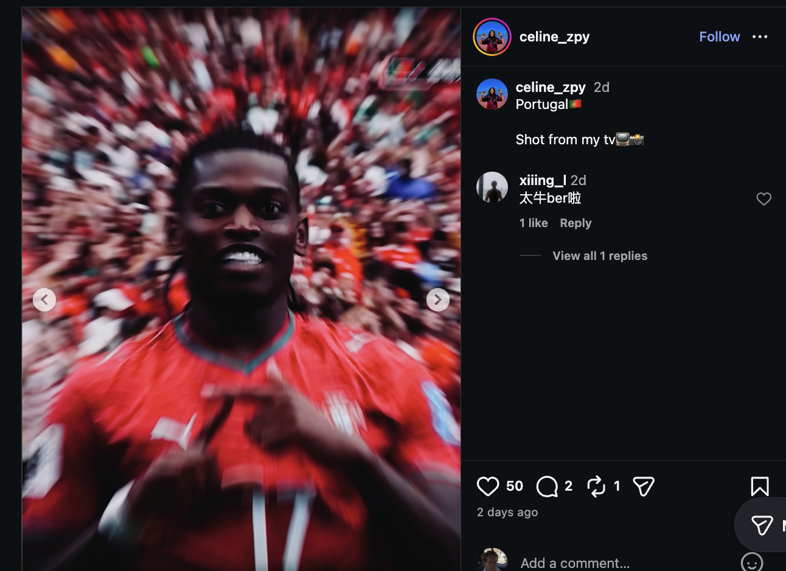

Phase 01
The Spark
Anomalous genesis
Florence Pernet turns a living room into a capture studio, photographing the broadcast itself. The credential that normally gates this imagery — a press pass, a pitch-side lens — is quietly replaced by a screen.
High grain, heavy motion blur, the pixel grid left visible. The mediation is the point.
